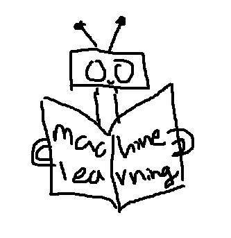

AI is a technology that has been around for a long time. It is first discover the term in 1956 at the Dartmouth Conferene where Science and Technology meet. The purpose of AI is to make human life easier. It is used in many different ways such as in the medical field, in the military, in the business field, and in the entertainment field. AI is used to help people in the medical, by processing medical data and assist in the diagnosis of diseases and treatment recommendation. In the military, AI is used to help with the security of the country. In the business field, AI is used to help with the business process and to help with the business decision making. In the entertainment field, AI is used to help with the entertainment process such as in the movie industry, in the music industry, and in the gaming industry.
We so far have seen many implementation for AI uses to the public, however in this earlier 2022, AI chatbox has release to the public uses. That's a ground breaking for the new era of AI. We did not expect that the newly release AI chatbot would have work perfectly, but it does. The AI chatbot is able to convere with the user and able to answer the question that the user ask. The AI chatbot is able to learn from the user and able to improve itself.
Natural Language Processing (NPL): Utilize natural language processing technology that empowers machines to comprehend and interpret human speech. This system processes user-provided input data through algorithms, ultimately tailoring the chat environment to provide responses that sound natural and personalized.
| Chatbot | Company | Year | price |
|---|---|---|---|
| Chat GPT | OpenAI | 2020 | Free |
| Chat GPT 4.0 | OpenAI | 2023 | Paid |
| Bing AI | Microsoft | 2021 | Free |
| Bard AI | 2023 | Free |